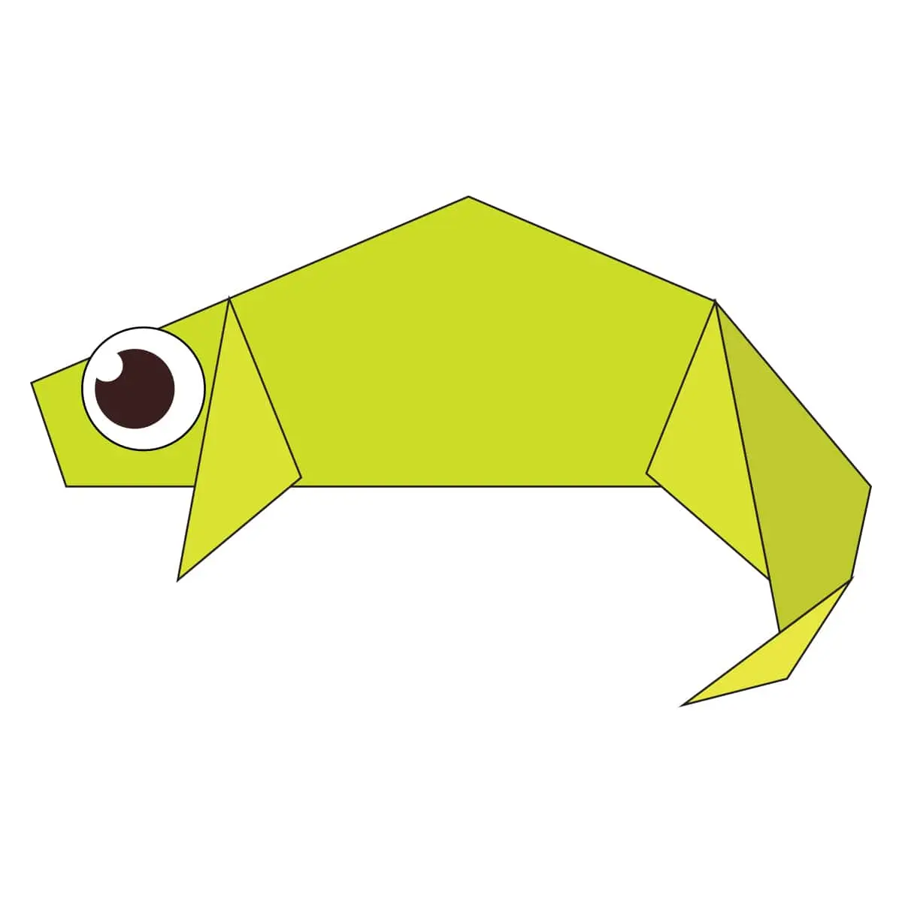

Origami Designs
About Us
Follow Us

Interesting Facts about Camel
- Camels have three sets of eyelids and two rows of eyelashes to keep sand out of their eyes.
- Camels have thick lips which let them forage for thorny plants other animals can’t eat.
- Camels can completely shut their nostrils during sandstorms.

Interesting Facts about Chameleon
- Chameleons are reptiles that are part of the iguana suborder.
- Chameleons have eyes in the backs of their heads.
- THEY MAINLY CHANGE COLOR IN ORDER TO COMMUNICATE OR REGULATE BODY TEMPERATURE.

Interesting Facts about Pigeon
- Pigeons are incredibly complex and intelligent animals. They are one of only a small number of species to pass the ‘mirror test’ – a test of self recognition.
- They can also recognise each letter of the human alphabet, differentiate between photographs, and even distinguish different humans within a photograph.
- Pigeons are renowned for their outstanding navigational abilities.

Interesting Facts about Teddy Bear
- The teddy was named after President Theodore Roosevelt, after he refused to shoot a bear during a 1902 hunting trip.
- They aren’t just for children – 40% of teddy sales are for adults, and a quarter of us still has our childhood companion.
- Inspired by a cartoon featuring the event, shopkeeper Morris Michtom and his wife Rose made a stuffed bear with a sign ‘Teddy’s bear’ and left it in their shop window. It gained so much attention that they started a successful toy making company.

Interesting Facts about Panda
- Giant pandas are good at climbing trees and can also swim.
- Pandas have so many fans because they look cute.
- Pandas are "lazy" — eating and sleeping make their day.

Interesting Facts about Cicada
- Cicadas can survive a huge fall as babies, or nymphs.
- Most have red-orange eyes. But occasionally cicadas have blue, white or grayish eyes. Keep on the lookout.
- Females may be attracted to the sound of motors.